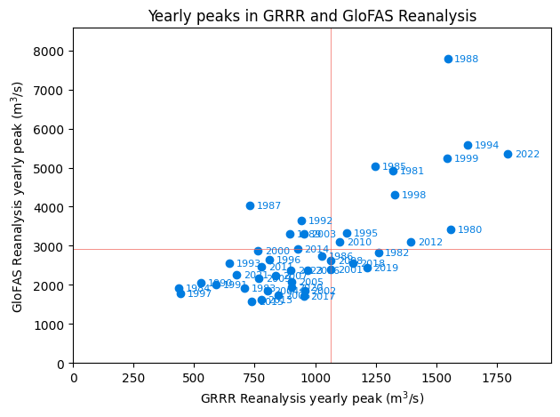
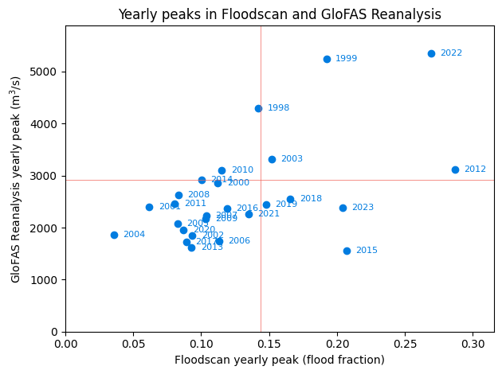
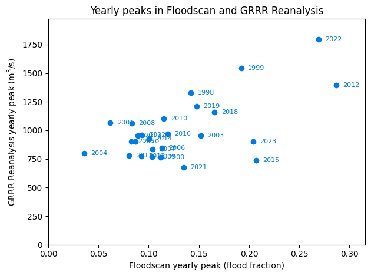
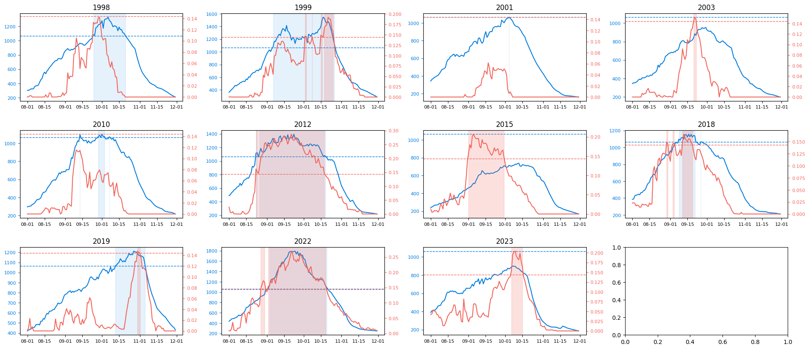

Code
%load_ext jupyter_black
%load_ext autoreload
%autoreload 2This notebook compares both Google and GloFAS reanalysis data against Floodscan, focusing particularly on how well they align in detecting 3-year exceedance events.
%load_ext jupyter_black
%load_ext autoreload
%autoreload 2import matplotlib.pyplot as plt
from matplotlib.dates import DateFormatter
import pandas as pd
import ocha_stratus as stratus
import numpy as np
from dotenv import load_dotenv
load_dotenv()
from src.datasources import glofas, grrr
SAPPHIRE = "#007ce0"
TOMATO = "#f2645a"
TOMATO_DARK = "#c25048"
TOMATO_LIGHT = "#f7a29c"
MINT = "#1ebfb3"
GREY_DARK = "#888888"
GREY_LIGHT = "#cccccc"Get the Google data
ds_ra = grrr.load_reanalysis()
df_ra_grrr = grrr.process_reanalysis(ds_ra)
ds_rf = grrr.load_reforecast()
df_rf_grrr = grrr.process_reforecast(ds_rf)/Users/hannahker/Desktop/ds-aa-nga-flooding/src/datasources/grrr.py:12: FutureWarning: In a future version of xarray decode_timedelta will default to False rather than None. To silence this warning, set decode_timedelta to True, False, or a 'CFTimedeltaCoder' instance.
return xr.open_zarr(Get the GloFAS data
df_ra_glofas = glofas.load_reanalysis().rename(columns={"time": "valid_time"})
df_rf_glofas = glofas.load_reforecast()Get the Floodscan data
df_fs_raw = stratus.load_parquet_from_blob(
"ds-aa-nga-flooding/processed/floodscan/fs_benue_pixels_1998_2024.parquet"
)
df_fs = df_fs_raw.groupby("date")["SFED"].mean().reset_index()
df_fs = df_fs.rename(columns={"date": "valid_time"})Compute return periods
df_ra_peaks_glofas = (
df_ra_glofas.groupby(df_ra_glofas["valid_time"].dt.year.rename("year"))
.agg(
dis24_max=("dis24", "max"),
dis24_max_date=(
"dis24",
lambda x: df_ra_glofas.loc[x.idxmax(), "valid_time"],
),
)
.reset_index()
)
df_ra_peaks_grrr = (
df_ra_grrr.groupby(df_ra_grrr["valid_time"].dt.year.rename("year"))
.agg(
streamflow_max=("streamflow", "max"),
streamflow_max_date=(
"streamflow",
lambda x: df_ra_grrr.loc[x.idxmax(), "valid_time"],
),
)
.reset_index()
)
df_peaks_fs = (
df_fs.groupby(df_fs["valid_time"].dt.year.rename("year"))
.agg(
sfed_max=("SFED", "max"),
sfed_max_date=(
"SFED",
lambda x: df_fs.loc[x.idxmax(), "valid_time"],
),
)
.reset_index()
)
rp = 3
rp_glofas = df_ra_peaks_glofas["dis24_max"].quantile(1 - 1 / rp)
rp_grrr = df_ra_peaks_grrr["streamflow_max"].quantile(1 - 1 / rp)
rp_fs = df_peaks_fs["sfed_max"].quantile(1 - 1 / rp)Now plot the yearly peaks
df_all_peaks = df_ra_peaks_glofas.merge(df_ra_peaks_grrr, how="inner")
df_all_peaks_fs = df_all_peaks.merge(df_peaks_fs, how="inner")def determine_detection_type(row, rp_y, rp_yhat, y, yhat):
happened = row[y] > rp_y
detected = row[yhat] > rp_yhat
if happened and detected:
return "TP" # True Positive
elif not happened and detected:
return "FP" # False Positive
elif not happened and not detected:
return "TN" # True Negative
else:
return "FN" # False Negative
def get_more_stats(TP, FP, FN):
precision = TP / (TP + FP)
recall = TP / (TP + FN)
f1 = 2 / ((1 / recall) + (1 / precision))
return precision, recall, f1
def plot_yearly_peaks(
df_plot, x, y, x_lab, y_lab, rp_x, rp_y, title, output, offset
):
fig, ax = plt.subplots()
ax.scatter(df_plot[x], df_plot[y], c=SAPPHIRE)
for idx, row in df_plot.iterrows():
ax.annotate(
row["year"],
(row[x] + offset, row[y]),
ha="center",
va="center",
fontsize=8,
c=SAPPHIRE,
)
ax.axvline(rp_x, lw=0.5, c=TOMATO)
ax.axhline(rp_y, lw=0.5, c=TOMATO)
ax.set_ylim(bottom=0, top=df_plot[y].max() * 1.1)
ax.set_xlim(left=0, right=df_plot[x].max() * 1.1)
ax.set_xlabel(x_lab)
ax.set_ylabel(y_lab)
ax.set_title(title)
plt.savefig(output, dpi=300, bbox_inches="tight")
plt.tight_layout()
plt.show()plot_yearly_peaks(
df_all_peaks,
"streamflow_max",
"dis24_max",
"GRRR Reanalysis yearly peak (m$^{3}$/s)",
"GloFAS Reanalysis yearly peak (m$^{3}$/s)",
rp_grrr,
rp_glofas,
"Yearly peaks in GRRR and GloFAS Reanalysis",
f"temp/glofas_grrr_reanalysis_peaks_rp{rp}.png",
80,
)
plot_yearly_peaks(
df_all_peaks_fs,
"sfed_max",
"dis24_max",
"Floodscan yearly peak (flood fraction)",
"GloFAS Reanalysis yearly peak (m$^{3}$/s)",
rp_fs,
rp_glofas,
"Yearly peaks in Floodscan and GloFAS Reanalysis",
f"temp/glofas_floodscan_reanalysis_peaks_rp{rp}.png",
0.015,
)
df_all_peaks_fs["detection_glofas"] = df_all_peaks_fs.apply(
lambda row: determine_detection_type(
row, rp_fs, rp_glofas, "sfed_max", "dis24_max"
),
axis=1,
)
counts_glofas = df_all_peaks_fs["detection_glofas"].value_counts().to_dict()
precision, recall, f1 = get_more_stats(
counts_glofas["TP"], counts_glofas["FP"], counts_glofas["FN"]
)
print("------ GloFAS detection stats agains Floodscan ------")
print(f"Precision: {precision}")
print(f"Recall: {recall}")
print(f"F1: {f1}")------ GloFAS detection stats agains Floodscan ------
Precision: 0.6666666666666666
Recall: 0.5
F1: 0.5714285714285714plot_yearly_peaks(
df_all_peaks_fs,
"sfed_max",
"streamflow_max",
"Floodscan yearly peak (flood fraction)",
"GRRR Reanalysis yearly peak (m$^{3}$/s)",
rp_fs,
rp_grrr,
"Yearly peaks in Floodscan and GRRR Reanalysis",
f"temp/grrr_floodscan_reanalysis_peaks_rp{rp}.png",
0.015,
)
df_all_peaks_fs["detection_grrr"] = df_all_peaks_fs.apply(
lambda row: determine_detection_type(
row, rp_fs, rp_grrr, "sfed_max", "streamflow_max"
),
axis=1,
)
counts_glofas = df_all_peaks_fs["detection_grrr"].value_counts().to_dict()
precision, recall, f1 = get_more_stats(
counts_glofas["TP"], counts_glofas["FP"], counts_glofas["FN"]
)
print("------ GRRR detection stats agains Floodscan ------")
print(f"Precision: {precision}")
print(f"Recall: {recall}")
print(f"F1: {f1}")------ GRRR detection stats agains Floodscan ------
Precision: 0.625
Recall: 0.625
F1: 0.625What if we triggered when GRRR > 3-year RP?
df_grrr_events = (
df_ra_grrr[df_ra_grrr["streamflow"] > rp_grrr]
.groupby(df_ra_grrr["valid_time"].dt.year.rename("year"))
.first()
.reset_index()
)[["year", "valid_time"]]
df_glofas_events = (
df_ra_glofas[df_ra_glofas["dis24"] > rp_glofas]
.groupby(df_ra_glofas["valid_time"].dt.year.rename("year"))
.first()
.reset_index()
)[["year", "valid_time"]]
df_fs_events = (
df_fs[df_fs["SFED"] > rp_fs]
.groupby(df_fs["valid_time"].dt.year.rename("year"))
.first()
.reset_index()
)[["year", "valid_time"]]What do the other datasets look like at these events?
def get_continuous_periods(mask):
"""Returns list of (start_idx, end_idx) tuples for continuous True periods in mask"""
if not any(mask):
return []
mask_array = np.array(mask)
result = []
start_idx = None
for i, val in enumerate(mask_array):
if val and start_idx is None: # Start of a run
start_idx = i
elif not val and start_idx is not None: # End of a run
result.append((start_idx, i - 1))
start_idx = None
# Handle case where the last run extends to the end
if start_idx is not None:
result.append((start_idx, len(mask_array) - 1))
return result# Get all the events
df_events = pd.concat([df_fs_events, df_grrr_events]).sort_values("year")
df_events = df_events[
(df_events.year >= 1998) & (df_events.year < 2024)
].reset_index()
df_merged = df_ra_grrr.merge(df_fs, how="inner")# Just get the flooding season
df_merged["month"] = df_merged.valid_time.dt.month
df_merged["year"] = df_merged.valid_time.dt.year
df_merged = df_merged[(df_merged.month > 7) & (df_merged.month < 12)]n_years = df_events["year"].nunique()
ncols = 4
nrows = round(n_years / ncols)
fig, axes = plt.subplots(
nrows=nrows, ncols=ncols, figsize=(ncols * 5, nrows * 3)
)
axes = axes.flatten()
for j, year in enumerate(df_events["year"].unique()):
dff = df_merged[df_merged["valid_time"].dt.year == year]
ax = axes[j]
ax2 = ax.twinx()
ax.plot(dff["valid_time"], dff["streamflow"], c=SAPPHIRE)
ax2.plot(dff["valid_time"], dff["SFED"], c=TOMATO)
axes[j].xaxis.set_major_formatter(DateFormatter("%m-%d"))
# Highlight streamflow exceedances
mask = dff["streamflow"] > rp_grrr
periods = list(get_continuous_periods(mask))
# Color y-axis labels and ticks
ax.tick_params(axis="y", colors=SAPPHIRE, labelsize=8)
ax2.tick_params(axis="y", colors=TOMATO, labelsize=8)
# Make x-axis font smaller
ax.tick_params(axis="x", labelsize=8)
for start_idx, end_idx in get_continuous_periods(mask):
ax.axvspan(
dff["valid_time"].iloc[start_idx],
dff["valid_time"].iloc[end_idx],
alpha=0.1,
color=SAPPHIRE,
)
# Highlight SFED exceedances
mask = dff["SFED"] > rp_fs
for start_idx, end_idx in get_continuous_periods(mask):
ax2.axvspan(
dff["valid_time"].iloc[start_idx],
dff["valid_time"].iloc[end_idx],
alpha=0.2,
color=TOMATO,
)
ax.axhline(rp_grrr, lw=1, c=SAPPHIRE, linestyle="--")
ax2.axhline(rp_fs, lw=1, c=TOMATO, linestyle="--")
ax.set_title(year)
# Add more spacing to avoid overlap
plt.tight_layout(h_pad=2.0, w_pad=1.0, pad=3.0)
plt.savefig(f"temp/grrr_events_rp{rp}.png")
Let’s look at the overall correlation across roughly the flooding season
# glofas vs floodscan
df_merged_glofas = df_fs.merge(df_ra_glofas, how="inner")
df_merged_glofas["month"] = df_merged_glofas.valid_time.dt.month
df_merged_glofas = df_merged_glofas[
(df_merged_glofas.month > 7) & (df_merged_glofas.month < 12)
]
corr_glofas = df_merged_glofas["SFED"].corr(
df_merged_glofas["dis24"], method="spearman"
)
print(corr_glofas)0.6800855356773761# grrr vs floodscan
df_merged_grrr = df_fs.merge(df_ra_grrr, how="inner")
df_merged_grrr["month"] = df_merged_grrr.valid_time.dt.month
df_merged_grrr = df_merged_grrr[
(df_merged_grrr.month > 7) & (df_merged_grrr.month < 12)
]
corr_grrr = df_merged_grrr["SFED"].corr(
df_merged_grrr["streamflow"], method="spearman"
)
print(corr_grrr)0.6951278240841906